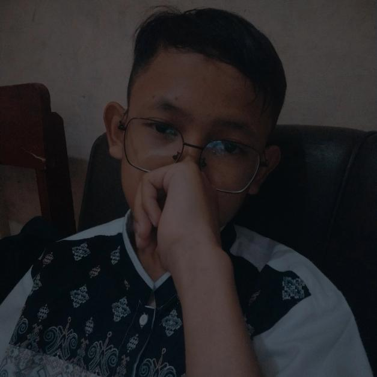

Saya adalah seorang pelajar Rekayasa Perangkat Lunak (RPL) yang antusias dalam membangun aplikasi web yang fungsional dan estetis. Saat ini saya fokus pada pengembangan backend menggunakan framework PHP dan menciptakan antarmuka pengguna yang modern.
Sebagai seorang santri, saya terbiasa disiplin dalam membagi waktu antara kegiatan pondok dan bereksperimen dengan desain baru atau membantu teman-teman menyelesaikan tantangan teknis pemrograman.
"Keseimbangan antara Doa dan Logika:
Menjadi Santri di Hati, Developer di Jari."

PHP (CodeIgniter 3), MySQL, Rest API
HTML5, CSS3 (Bootstrap), JavaScript
Canva, UI/UX Design, Glassmorphism
Sistem manajemen perpustakaan digital sekolah dengan dashboard admin lengkap.
Masih tahap pengembangan.
Sistem absensi berbasis web menggunakan teknologi QR Code untuk efisiensi waktu.
Platform "Kilas Balik Kelas" untuk menyimpan kenangan dan dokumentasi siswa.
Landing page untuk informasi Pendaftaran Peserta Didik Baru SMK Mihadunal Ula.
Website pribadi dengan konsep Dark Mode, Glassmorphism, dan efek Cyber Neon.
Undangan pernikahan digital interaktif dengan integrasi musik dan WhatsApp.